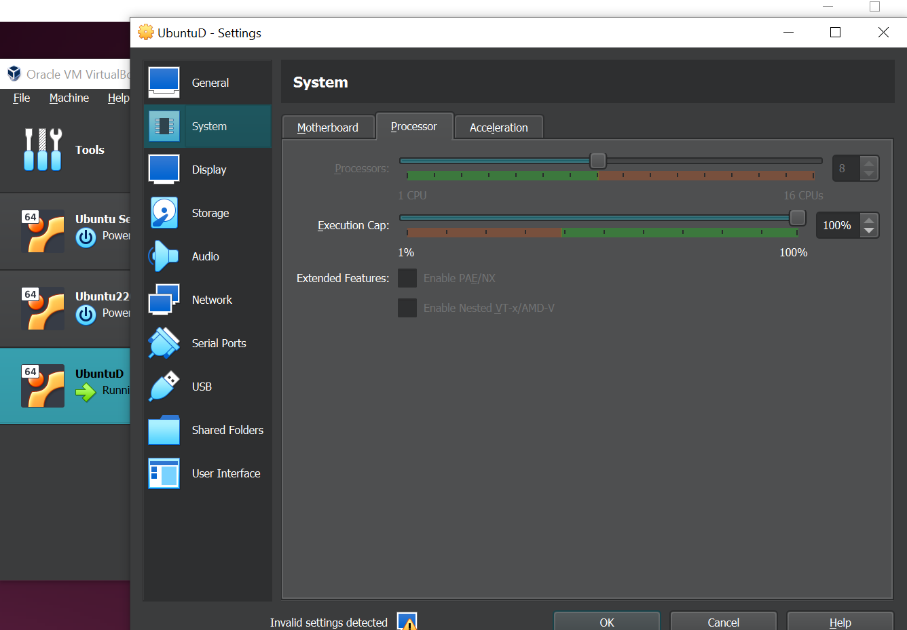
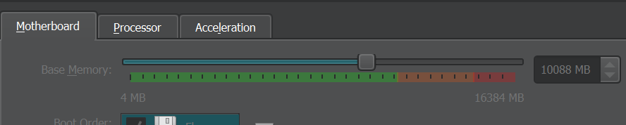
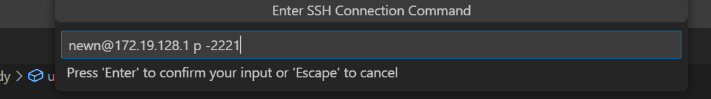
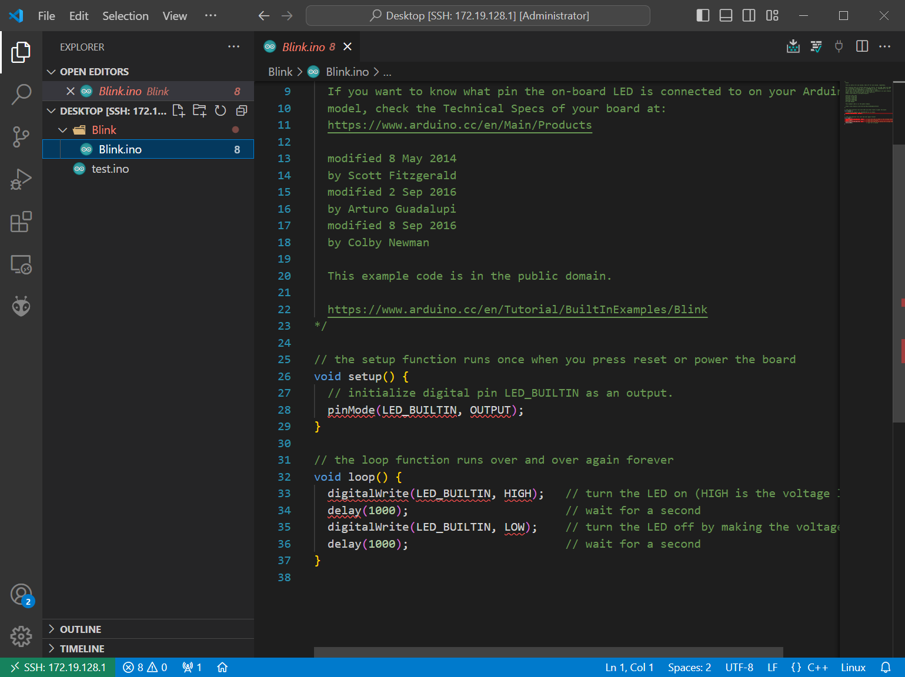
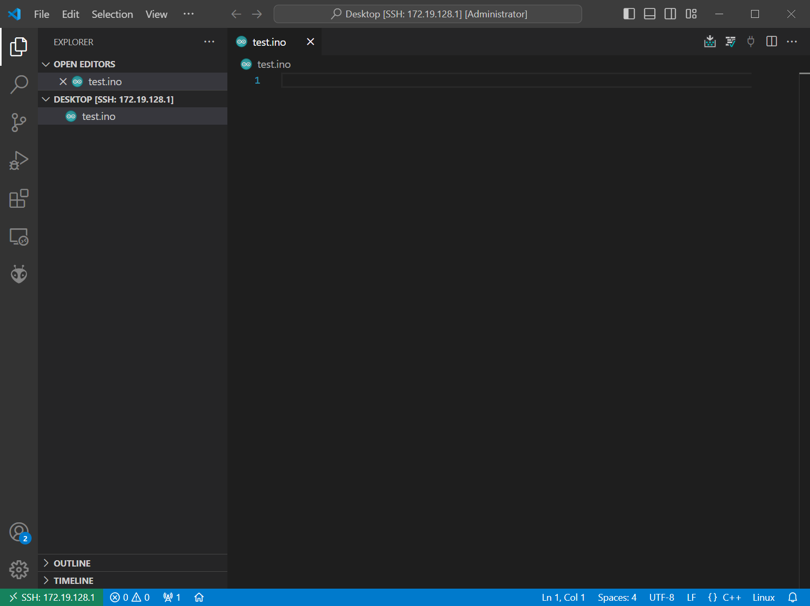

The SSH
This is how I use SSH and solved the upcoming problems
Task1 Install the arduino IDE ont the Ubuntu VM
- First problem is the VM is dramatically slow, so I fixed it by increase all the memories and increase the amount of the processing core to 8 from 1


- After installed arduino and get the Blink sketch I cannot find the port of the board.

- Then I found that you need to make the filter which port the VM can use.

- The task say 'build the Arduino sketch sample' so i decide to build a blink sample and change the delay to 5000

- The board(I did not record the video of it processing apologise)
- insert arduino board .jpg
Task 2 Installation of VS Code IDE software and extensions
- I already have the VSCODE IDE and the Remote development Extensions

- Then i connect the Vscode to the Ubuntu by SSH
- The way to do this is press F1 when you are in the VScode and a input section will pop up

- Then add a destination by running this command

- Then connect

- Now I am successfully connect to my ubuntu Vm as you can see

- I am not entirely sure that is this because the PlatformIO or not that make me able to modify the VM as my another computer but now I can modify the VM remotely!

- And the rest of the process is the as same as Task 1